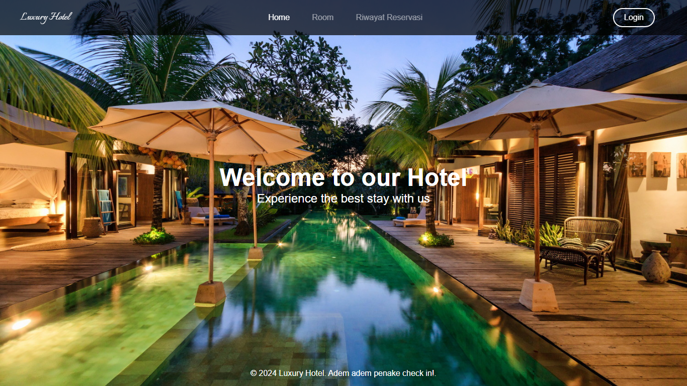

Hallo Saya Afifah Mutmainah
dan saya adalah mahasiswa Teknik Informatika
Pengembang aplikasi dan web yang fokus pada desain modern, performa tinggi, serta solusi berbasis teknologi.

Halo, perkenalkan saya Afifah Mutmainah, mahasiswa S1 Teknik Informatika di Universitas Duta Bangsa Surakarta dengan fokus di bidang pemrograman dan pengembangan website. Saya memiliki ketertarikan pada teknologi digital, khususnya Web Development dan UI/UX Design.
Saya adalah pribadi yang teliti, disiplin, bertanggung jawab, dan memiliki semangat belajar yang tinggi. Selain mampu bekerja secara mandiri, saya juga dapat bekerja sama dengan baik dalam tim.
Dengan kemampuan dan minat yang saya miliki, saya ingin terus mengembangkan keterampilan serta memperoleh pengalaman langsung di dunia kerja dan industri teknologi.
SMK Negeri 1 Boyolali
Teknik Komputer dan Jaringan (TKJ)
Universitas Duta Bangsa Surakarta
S1 Teknik Informatika
Klaten, Jawa Tengah
Mahasiswa Aktif
UI/UX Design (Figma)
Pengembangan Website Dasar
Pengelolaan Basis Data (MySQL, Supabase)
Teliti
Disiplin
Bertanggung Jawab
Problem Solving
Komunikasi
Kerja Tim

Luxury Hotel adalah website sistem reservasi kamar hotel yang memungkinkan pelanggan melihat informasi kamar dan melakukan reservasi secara online...

Simple Daily Notes adalah aplikasi mobile Android yang dirancang untuk membantu pengguna mengelola catatan harian...

Merancang UI GuesMyFruit, sebuah sistem klasifikasi buah berbasis web yang menggunakan CNN dan LLM...
.png)
GuessMyFruit adalah web yang bisa mengidentifikasi jenis buah hanya dari gambar yang diunggah pengguna. Website ini menggabungkan CNN untuk...
.png)
Niku Shoes adalah aplikasi berbasis web yang dirancang untuk membantu operasional toko sepatu menjadi lebih terstruktur dan...